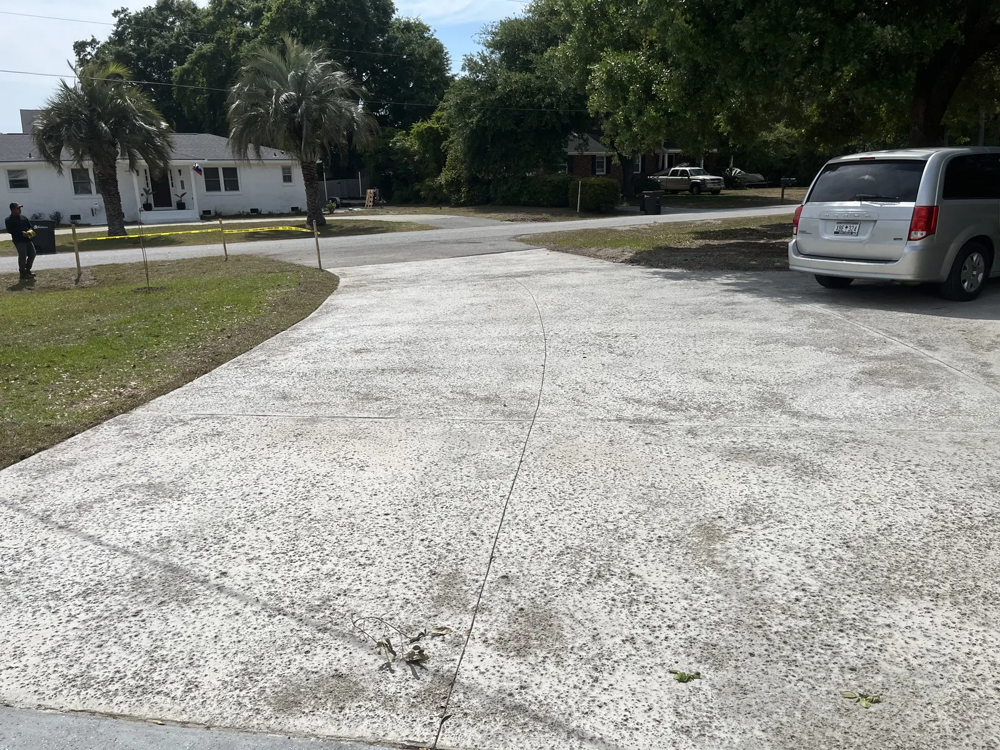
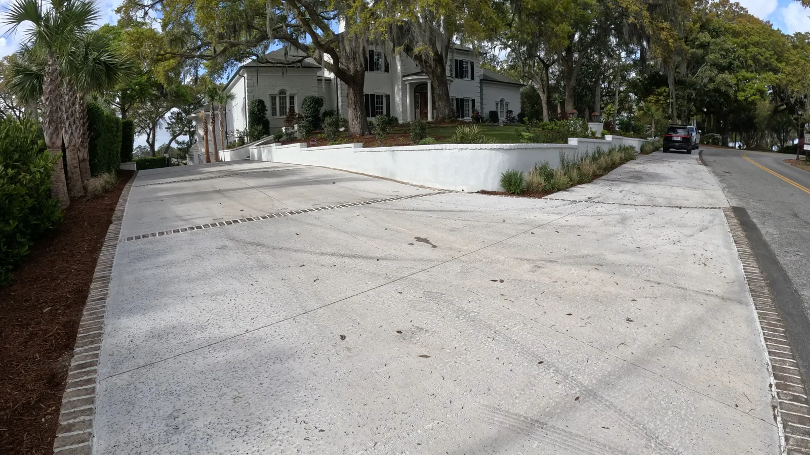
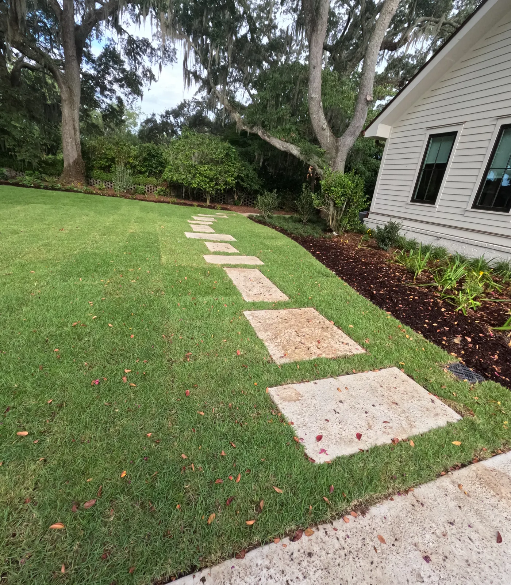

Concrete Driveways and Poured Concrete in Charleston, SC

Poured In-House, at the Thickness You Paid For
Concrete is the one trade where the corners that get cut are invisible by the time you see the job. Once it’s poured, nobody can tell how deep the dig-out went or whether there’s steel in it.
We pour driveways, walkways, slabs and parking courts across Charleston, Mount Pleasant and Summerville. Doug and Zach Cramer do the site visits themselves, and one of them is on the job the day it’s poured — which is the day that decides everything.
For poured concrete patios and pool decks, those have pages of their own.
What a Concrete Driveway Costs
Poured concrete runs about $12 a square foot. The finish choices add to that; most of the rest of the variation is prep.
| Poured concrete | about $12/sq ft |
|---|---|
| Stamping, colorant, cut patterns | added on top |
| Rebar, wire mesh, vapour barrier | priced on what the slab needs |
| Dig-out, or removing an old driveway | additional |
Stamping and color are finish choices — dial them up or down without changing how long the driveway lasts. The prep line is the one that decides that, and it’s the line a cheap quote leaves out.

How Thick Should a Concrete Driveway Be?
At least 4 inches. That part isn’t controversial. How it goes wrong is.
Plenty of companies frame with 2x4 — and a 2x4 is 3.5 inches, not 4. If the dig-out only goes to the bottom of the form, you get a 3.5-inch slab that was quoted as a 4-inch slab. Half an inch doesn’t sound like much until you remember it’s the half inch carrying a truck.
It’s the easiest corner to cut on a driveway and the hardest one to spot afterwards. If you’re comparing quotes, ask how deep the dig-out goes — not what the forms are made of.
Mesh, Rebar, Joints and the Cure
The rest of what separates a slab that lasts from one that doesn’t:
- Mesh holds it together. Rebar stops it bending. Those are different jobs. Mesh keeps a slab intact once it has cracked; rebar resists the bending that causes the crack. Which one a slab needs depends on what’s going over it and what’s under it.
- Control joints no more than 15 feet apart, and no panel over 300 square feet. Concrete is going to move. Joints decide where it cracks, so it cracks in a straight line you meant instead of across the middle.
- An expansion board wherever a slab meets other concrete or a building. Without it the two pieces fight as they move, and something gives.
- Fiber in the mix, and wetting the concrete as it cures. Both help the cure and the final strength. Curing happens after everyone has gone home, which is precisely why it gets skipped.
Salt-Void, Tabby and Stamped
Salt-void and tabby are the two we’re asked for most, and neither costs what a full stamped job does.
- Salt-void gives a nice texture and a weathered look — it reads as though it’s been there a while, which is usually the point.
- Tabby is perfect for the coastal beach vibe, and it’s hard to beat with a brick border run around it.
- Stamping, colorant and cut patterns are available and they do add cost. They’re a look, not a structural decision.


Why Driveways Crack
Three causes, and the first one is on whoever poured it:
- Improper install. Too wet a mix, too thin a slab, or no reinforcement where it needed some. All three are decisions made on pour day.
- Tree roots. These cause more problems here than anything else — live oaks don’t negotiate.
- A base that has settled over time, which takes the slab down with it.
Only the first is avoidable purely by building it right. The second is avoidable by planning around what’s already growing, which is a conversation worth having before the design is set rather than after.
How Long Before You Can Drive On It?
- Walk on it: within a day or two.
- Drive on it: wait a week.
Cold or rainy weather extends both. Concrete cures on its own schedule, not on yours, and rushing the first drive on it is a good way to undo a week’s work. We’ll tell you the date rather than the rule of thumb.
How We Pour Yours
- Free consultation at your home. We look at the space, what’s driving over it and what budget you’re comfortable with. Free anywhere around Charleston, Mount Pleasant and Summerville; farther out, like Bluffton or Kiawah Island, there’s a trip charge.
- Budget and design. Drawings, with optional 3D renderings at an additional cost.
- Dig-out and prep. Down to the depth the slab actually needs, with the old driveway removed if there is one, then base, vapour barrier and steel.
- Pour, finish and joint. Salt-void, tabby, broom or stamped, with the control joints cut to spacing.
- Cure. Wetted as it cures, and we tell you the day you can drive on it.
Concrete works alongside patios and pavers, pool decks, retaining walls, grading and drainage. Everything is backed by our 1-year workmanship warranty, and Cramers is a licensed residential builder and insured.
Areas We Serve
Cramers Landscaping provides its services throughout:
We pour concrete driveways in Charleston, SC throughout Charleston County, including Charleston, Mount Pleasant, West Ashley, Summerville, Folly Beach, and Sullivan’s Island.
- Charleston, SC
- Mount Pleasant, SC
- Isle of Palms, SC
- North Charleston, SC
- James Island, SC
- West Ashley, SC
- Kiawah Island, SC
- Summerville, SC
- Daniel Island, SC
- Johns Island, SC
Frequently Asked Questions
How much does a concrete driveway cost?
About $12 a square foot for poured concrete. Stamping, colorant and cut patterns add to that. Beyond the finish, what moves the number is prep — rebar, wire mesh, a vapour barrier, the dig-out, and removing an old driveway if there is one to take out.
How thick should a concrete driveway be?
At least 4 inches. Watch how it gets formed, though: plenty of companies frame with 2x4, and a 2x4 is 3.5 inches, not 4. If the dig-out only goes to the bottom of the form, you end up with a 3.5-inch slab that was quoted as 4. It is the single easiest corner to cut on a driveway and the hardest one to see once the concrete is down.
Do you use wire mesh or rebar?
They do different jobs. Mesh holds the slab together once it has cracked. Rebar resists bending, which is what stops it cracking in the first place. Which one a slab needs depends on what is going over it and what is underneath it, and we price it on the job rather than leaving it out to hit a number.
How far apart should control joints be?
No more than 15 feet apart, and no panel larger than 300 square feet. Concrete is going to move; joints decide where it cracks so it cracks in a straight line you meant rather than across the middle of the slab.
Do I need an expansion joint?
Where a new slab runs up against other concrete or against a building, yes — that gets an expansion board. Without it the two pieces fight each other as they move and something has to give.
How long before you can drive on a new concrete driveway?
You can walk on it within a day or two. Wait a week before driving on it. Cold or rainy weather extends both, because the concrete cures more slowly.
Why do concrete driveways crack?
Usually the install: too wet a mix, too thin a slab, or no reinforcement where it needed some. After that it is tree roots, which cause more problems here than anything else, and a base that has settled over time.
What is the best finish for a concrete driveway in Charleston?
Salt-void and tabby are the two we do most. Salt-void gives a nice texture and a weathered look. Tabby is perfect for the coastal beach vibe and it is hard to beat with a brick border around it. Both hold up better visually than a plain broom finish as they age.
What is tabby concrete?
A finish with shell exposed in the surface — a Lowcountry look with a long history here. It suits coastal houses, and it is the one people most often point at when they say they want the driveway to look like it belongs to the house.
Does a stamped concrete driveway cost more?
Yes. Stamping, colorant and cut patterns all add to the base price. They are finish choices rather than structural ones, so they are the part of the budget you can dial up or down without affecting how long the driveway lasts.
Does fiber in the mix help?
It does, along with wetting the concrete as it cures. Both help the cure and the finished strength. Curing is the part that happens after everyone has left, which is exactly why it is the part that gets skipped.
Request a Free Concrete Consultation
Ready to transform your property with professional concrete work? Contact Cramers Landscaping, your trusted Charleston concrete company, for expert patios, driveways, walkways, and pool decks.
Call 843-709-6140 today to schedule your free on-site consultation and discover why Charleston homeowners choose us for quality concrete design and installation.